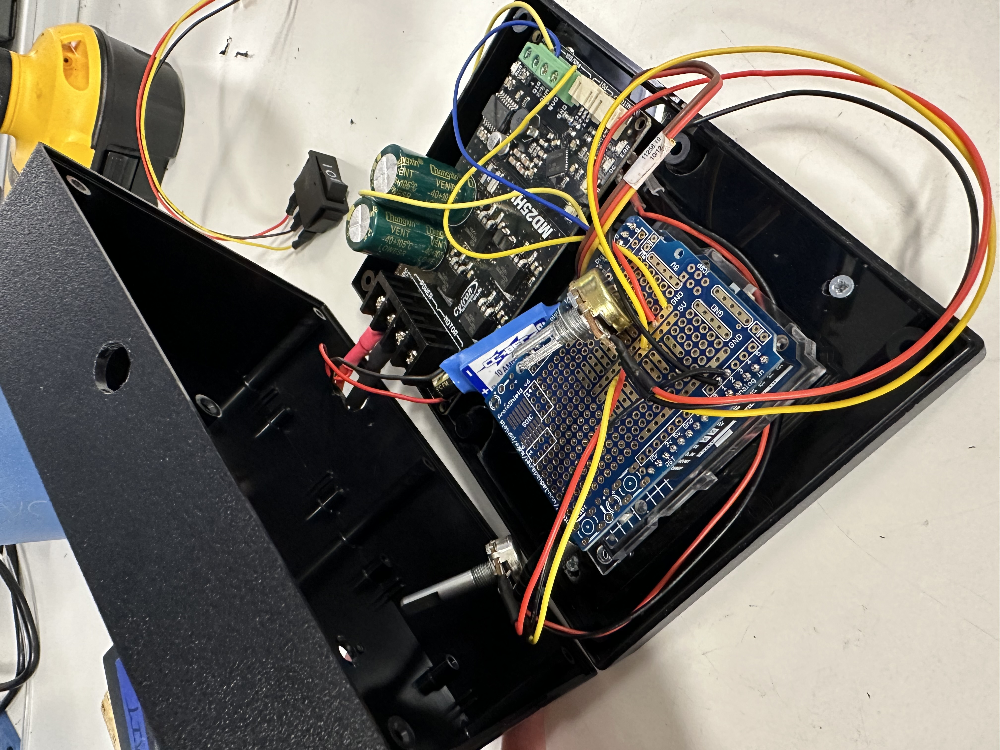

Wave Generator Controller
Overview
I designed and built the electronic control system for a portable wave generator intended for educational use in small-scale water tanks. The handheld controller regulates a linear actuator, allowing users to adjust the speed and frequency of the generated waves. An Arduino Uno, motor driver, potentiometer, switches, and other electronic components were integrated into a compact enclosure for simple operation. The electronics and control logic were assembled and tested to ensure the actuator responded reliably to user inputs.
